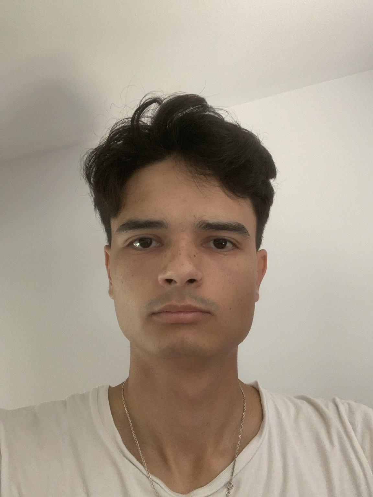

Disponible immédiatement
Temps partiel, flexible
Permis B, véhicule personnel

KAJIKI · Chef sushi à domicile
2024–2026
Organisation d'événements, notamment à L'Élytre (Montpellier)
Préparation et dressage de sushi
Service omakase au comptoir
Achats et approvisionnement
Normes HACCP
Onakaya · Commis de cuisine
2023Restaurant japonais, cuisine ouverte (Nice)
Mise en place
Préparation
Nettoyage et propreté
Service en équipe
Bac S
Licence de droit
Normes HACCP
Préparation alimentaire
Travail en équipe
Organisation
Fiabilité
Français
Anglais
Espagnol